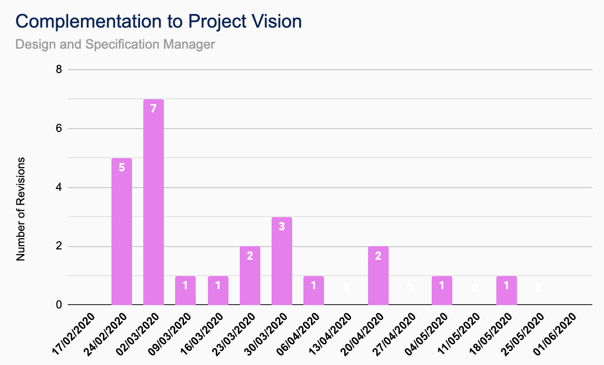

Stijn Marynissen
Contributions
| Documentation |
|---|
| CUBIXEL QA Manual |
| TutorPoint Functional Specification |
| TutorPoint |
|---|
| All Window/FXML files |
| Dynamic Home Page |
| Text Chat Presentation |
TutorPoint Breakdown


QA Metrics
-

User Experience Satisfaction
Difference in number of positive responses against negative responses gained from focus groups and user interviews on using the product directly. This is measured at the end of each iteration, starting from the 2nd iteration. -

Similarity to Design Vision
Difference in number of positive responses against negative responses from feedback and discussions with the client on the product design philosophy and specification. This is measured at the start of every Thursday, starting from the 2nd iteration. -

Complementation to Project Vision
Number of redesign iterations initialised by the client or on site customer, including removed design features. This is measured continually throughout iterations with a total number of redesigns for each work week every Thursday.